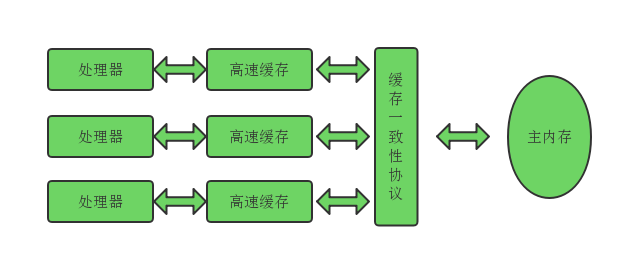
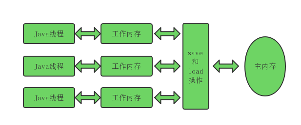

硬件效率与一致性
尽管现代内存的速度在不断提高，但是内存的速度与cpu比起来还不在一个量级，为了提升计算速度，在内存和处理器之间加上一个高速缓存来作为内存和处理器之间的缓冲。基于高速缓存的方法很好的解决了处理器与内存的矛盾，但是也引入了一个新的问题：缓存一致性。每个处理器都有自己的高速缓存，而他们又共享一个主内存。当处理多个处理器的运算任务都涉及同一个主内存区域时，将可能导致各自的缓存数据不一致，如果真发生这种情况，将同步到主内存的数据到底以谁的缓存数据为准。为了解决一致性问题，需要各个处理器访问缓存时都遵循一些协议。

除了增加高速缓存之外，为了使得处理器内部的运算单元尽可能被充分利用，处理器可能会对输入代码进行乱序执行优化，处理器会在计算之后将乱序执行的结果重组，保证该结果与顺序执行的结果是一致的，但并不保证程序中各个语句计算的先后顺序与代码中的顺序一致。因此，如果某个计算任务依赖另外一个计算任务的中间结果，那么其顺序性并不能靠代码的先后顺序来保证。Java虚拟机的即时编译器中也有类似的指令重排序优化。
Java内存模型
Jvava虚拟机规范中通过定义一种Java内存模型来屏蔽掉各种硬件和操作系统的内存差异，来实现Java程序在各种平台下都能达到一致的内存访问效果。
主内存与工作内存
Java内存模型的主要目标是定义程序中各个变量的访问规则，即在虚拟机中将变量存储到内存和从内存中取出变量这样的底层细节。此处的变量与Java中的变量有所区别，它包括了实例字段、静态字段和构成数组对象的元素，但不包括局部变量和方法参数，因为后者是线程私有的，不会被共享，自然就不会存在竞争问题。
Java内存模型规定了所有的变量都存储在主内存中。每个线程还有自己的工作内存，线程的工作内存中保存了被该线程中使用到的变量的主内存拷贝副本，线程对变量的所有操作都必须在工作内存中进行，而不能直接读写主内存中的变量。不同的线程之间也无法直接访问对方工作内存中的变量，线程间变量值的传递均需要通过主内存来完成。

内存间交互操作
关于主内存与工作内存之间具体的交互协议，即一个变量如何从主内存拷贝到工作内存，如何从工作内存同步到主内存之类的同步细节，Java内存模型中定义了8种操作来完成。
- Lock（锁定）：作用于主内存的变量，他把变量标识为一个线程独占的状态。
- unlock(解锁) ：作用于主内存的变量，它把一个处于锁定状态的变量释放出来，释放后的变量才可以被其他线程锁定。
- read（读取）：作用于主内存的变量，它把一个变量的值从主内存中读取到线程工作内存中，以便随后的load动作使用。
- load（载入）：作用于工作内存中的变量，它把read操作从主内存中得到的变量值放入工作内存中的变量副本中。
- use（使用）：作用于工作内存的变量，它把工作内存中一个变量的值传递给执行引擎，每当虚拟机遇到一个需要使用到变量的值的字节码指令将会执行这个操作。
- assign（赋值）：作用于工作内存的变量，它把执行引擎接收到的值付给工作内存的变量，每当虚拟机遇到一个给变量赋值的字节码指令时执行这个操作。
- store（存储）：作用于工作内存的变量，它把工作内存中的一个变量的值传递到主内存中，以便随后的write操作使用。
- write（写入）：作用于主内存的变量，它把store操作从工作内存中得到的变量的值放入主内存的变量中。
如果要把一个变量从主内存复制到工作内存，就要顺序地执行read和load操作，如果把变量从工作内存同步回主内存，就要顺序地执行store和write操作。Java内存模型还规定了在执行上述8种基本操作必须满足如下规则：
- 不允许read和load。store和write操作之一单独出现。
- 不允许一个线程丢弃它最近的assign操作，即变量在工作内存中改变了之后必须把该变化同步回主内存。
- 不允许一个线程无原因的把数据从线程的工作内存同步回主内存。
- 一个新的变量只能在主内存中诞生，不允许在工作内存中直接使用了一个未被初始化的变量，换句话说，就是一个变量实施use、store操作之前，必须先执行过了assign和load操作。
- 一个变量在同一个时刻只允许一个线程对其进行lock操作，但lock操作可以被同一条操作重复执行多次，多次执行lock之后，只有执行相同次数的unlock操作，变量才会被解锁。
- 如果对一个变量执行lock操作，那将会清空工作内存中此变量的值，在执行引擎使用这个变量前，需要重新load和assign操作初始化变量的值。
- 如果一个变量实现没有被lock操作锁定，那就不允许对它执行unlock操作，也不允许去lock一个被其他线程锁定住的变量。
- 对一个变量执行unlock操作之前，必须先把此变量同步回主内存中。
volatile
首先介绍一下volatile所修饰的变量的特性：
第一是保证此变量对所有线程的可见性，这里的“可见性”是指当一个线程修改了这个变量的值，新值对于其他线程来说是可以立即得到的。而普通变量不能做到这一点，普通变量的值在线程间传递均需要通过主内存来完成。
volatile的第二个作用是禁止指令重排序优化，普通的变量仅能保证在该方法的执行过程中所有依赖赋值结果的地方都能获取到正确的结果，而不能保证变量赋值操作的顺序与程序代码执行的顺序一致。
long和double型变量的特殊规则
Java内存中对于lock、unlock、read、load、use、assign、store、write八种操作都是具有原子性的，但是对于64位的数据类型，在模型中特别定义了一条相对宽松的规定：允许虚拟机将没有被volatile关键字修饰的64位数据的读写操作划分为两次32位的操作来进行。即虚拟机实现选择可以不保证64位数据类型的load、store、read和write这4个操作的原子性。
如果多个线程共享一个并未被声明为volatile的long和double类型的变量，并且同时对它们进行了读取和修改操作，那么某些线程可能读取到一个并非原值，也不是被其他线程修改的代表了“半个变量的数值”。
为避免这种情况，现在的各种商用虚拟机几乎都选择把64位数据的读写操作作为原子操作来对待。因此我们在编写代码时一般不需把long和double变量专门声明为volatile。
原子性、可见性和有序性
原子性：由Java内存模型来直接保证的原子性操作包括read,load,assign.use,store,和write。应用到更大的场景中时，Java内存模型还提供了lock和unlock操作来满足这个需求，尽管虚拟机未把lock和unlock操作直接开放给用户使用，但是却提供了更高层次的字节码指令monitorenter和monitorexit来隐式的使用这两个操作，这两个字节码反映到Java代码中就是同步块：synchronized关键字。因此在synchronized块之间的操作也具有原子性。
可见性：可见性是指当一个线程修改了共享变量的值，其他线程能够立即得知这个修改。Java内存模型是通过在变量修改后将新值同步回主内存，在变量读取之前从主内存刷新左边两只这种依赖主内存作为传递媒介的方式来实现可见性，无论是普通变量还是volatile变量都是如此。普通变量和volatile变量的区别在于volatile变量的特殊规则保证了新值能够立即同步到主内存，以及每次使用前能够立即从主内存刷新。因此可以说volatile关键字保证了多线程操作时变量的可见性，而不同变量不能保证这一点。
Java还有两个关键字来保证可见性：即synchronized和final。synchronized的可见性是由“一个变量执行unlock操作之前，必须先把变量同步回主内存中”这条规则获得的。final关键字的可见性是指:被final修饰的字段在构造器中一旦初始化完成，并且构造器没有把“this”引用传递出去，那么其他线程就能看见final关键字的值。
有序性：如果在本线程中观察其他线程，所有操作都是无序的。Java语言提供了volatile和synchronized两个关键字来保证线程之间操作的有序性。而volatile关键字本身就包含了禁止指令重排序的语义，而synchronized则是由“一个变量在同一个时刻只允许一条线程对其进行lock操作”这条规则来获得的。这个规则决定了拥有同一个锁的两个同步块只能串行的进入。
先行发生原则(happen-before原则)
如果Java内存中所有的有序性都是依靠volatile和synchronized来完成，那么有一些操作将会变得很繁琐。但是Java语言中有一个“先行发生”的原则。这个原则非常重要，它是判断数据是否存在竞争、线程是否安全的重要依据。
先行发生原则：在Java内存模型中定义了两项操作顺序之间的偏序关系，如果操作A先行发生于操作B，其实就是说在发生操作B之前，操作A产生的影响能被操作B观察到，“影响”包括修改了内存中共享变量的值，发送了消息，调用了方法等。
Java内存模型中包括下列一些天生发生的先行发生关系，如果两个操作之间不在此列，虚拟机可以对它们随意地进行重排序：
- 程序次序执行规则：在一个线程内，按照代码顺序执行，前面的操作先行发生于书写在后面的操作。
- 管程锁定规则：一个unlock操作先行发生于后面（时间上的先后）对同一个锁的lock操作。
- volatile变量规则：对于一个volatile变量的写操作先行发生于后面对这个变量的读操作。
- 线程启动规则：Thread对象的start()方法先行发生于此线程的每一个动作。
- 线程终止规则：线程的所有操作都先行发生于对此线程的终止操作
- 线程中断规则：对线程interrupt（）方法的调用先行发生于被中断线程的代码检测到中断时间的发生。
- 对象终结规则：一个对象的初始化完成先行发生于它的finalize（）方法的开始。
- 传递性：若A先行于B发生，B先行于C，那么得出A先行于C
我们衡量并发安全问题的时候不要受到时间顺序地干扰，必须以先行发生原则为准。
参考文献
《深入理解Java虚拟机:JVM高级特性与最佳实践》 周志明著


本文首发于我在万达摆地摊's blog，转载请注明来源